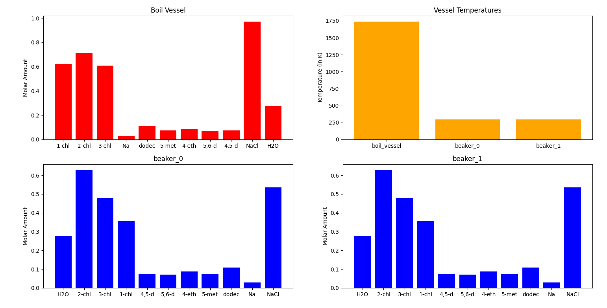
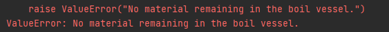
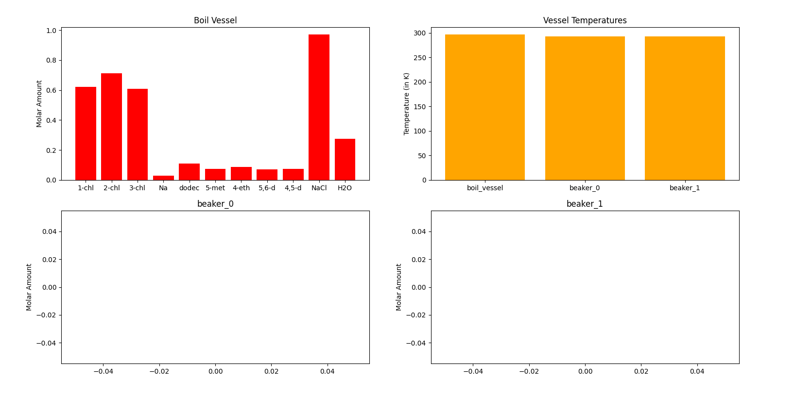

Distillation Bench: Lesson 2
This experiment consists of 3 main parts. We will: - Increase to the maximum temperature with a multiplier of 6 - Increase to the maximum temperature with a multiplier of 7 - Decrease to the minimum temperature with a multiplier of 3
We will see how these actions play out in the distillation bench environment and gain more intuition into how the distillation bench works.
First let's start by importing all the required modules.
# import all the required external modules
import gym
import numpy as np
import os
import pickle
import sys
from time import sleep
from gym import envs
import matplotlib.pyplot as plt
import pandas as pd
# ensure all necessary modules can be found
sys.path.append("../") # to access chemistrylab
sys.path.append("../chemistrylab/reactions") # to access all reactions
# import all local modules
import chemistrylab
# show all environments for distillation bench
all_envs = envs.registry.all()
env_ids = [env_spec.id for env_spec in all_envs if 'Distillation' in env_spec.id]
print(env_ids)
['Distillation-v0']
You'll notice that the setup is the same as in lesson 1. Nothing changes for the initialization in this project. The main difference is in the loop later.
# allows user to pick which environment they want to use
# initializes environment
select_env = int(input(f"Enter a number to choose which environment you want to run (0 - {len(env_ids) - 1}): \n"))
env = gym.make(env_ids[select_env])
render_mode = "human"
Enter a number to choose which environment you want to run (0 - 0):
0
done = False
__ = env.reset()
print('\n')
| action[0] | |
|---|---|
| 0 | Add/Remove Heat (Heat Value multiplier, relative of maximal heat change) |
| 1 | Pour BV into B1 (Volume multiplier, relative to max_vessel_volume) |
| 2 | Pour B1 into B2 (Volume multiplier, relative to max_vessel_volume) |
| 3 | Pour B1 into BV (Volume multiplier, relative to max_vessel_volume) |
| 4 | Pour B2 into BV (Volume multiplier, relative to max_vessel_volume) |
| 5 | Done (Value doesn't matter) |
action_set = ['Add/Remove Heat', 'Pour BV into B1', 'Pour B1 into B2', 'Pour B1 into BV', 'Pour B2 into BV', 'Done']
assert env.action_space.shape[0] == 2
total_steps=0
total_reward=0
Here we see that there are 3 main actions, where 2 are commented out. Based on which part of the lesson you're on, please uncomment the needed action.
| Action | Array | Significance |
|---|---|---|
| Increasing the temperature all the way up with a multiplier of 6 | [0,6] | This will allow us to increase the temperature to the maximum amount without resulting in all the materials being boiled off in the vessel. |
| Increasing the temperature all the way uo with a multiplier of 7 | [0,7] | This will increase the temperature to the maximum amount however all the materials will boil off resulting in an error. |
| Decrease the temperature down | [0,3] | Shows that there is a minimum temperature for the boiling vessel and that it will not go below this temperature. |
while not done:
# ACTION 1
# increase temperature all the way up
action = np.array([0,6])
# ACTION 2
# results in temperature being too high and all material is boiled off in the vessel
# action = np.array([0,7])
# ACTION 3
# decrease temperature all the way down
# action = np.array([0,3])
# perform the action and update the reward
state, reward, done, __ = env.step(action)
print('-----------------------------------------')
print('total_steps: ', total_steps)
print('reward: %.2f ' % reward)
total_reward += reward
print('total reward: %.2f' % total_reward)
print(action)
print('Temperature of boiling vessel: %.1f ' % env.boil_vessel.temperature, ' K \n')
# print(state)
# render the plot
env.render(mode=render_mode)
# sleep(1)
multiplier = 2 * (6 / 10 - 0.5)
print(multiplier * 1)
print(env.boil_vessel.temperature)
print('hello: ', env.distillation.dQ)
print('hi: ', env.distillation.n_increments)
#increment one step
total_steps += 1
Let's try increasing the temperature of the boiling vessel (ACTION 1)
# ACTION 1
# increase temperature all the way up
action = np.array([0,6])
When we run this code we should see that for every timestep that there is a heat change of 19999.99 joules and that the temperature eventually reaches 1738.0 Kelvin. We end up with a final graph that looks like this:

As you can see all the material is boiled off from the boiling vessel into the condensation vessel.
Again the graphs are showing the wrong values
Increasing the temperature with a higher multiplier (ACTION 2)
# ACTION 2
# results in temperature being too high and all material is boiled off in the vessel
action = np.array([0,7])
For this we will uncomment action 2. Now running this code gives us an interesting result. Run it yourself to see that we will get:

We get this error as since we increased the temperature by a higher multiplier we were able to boil off all the materials in the boiling vessel before letting the agent finish after 20 steps. It's important to note that choosing a very large multiplier can result in this error.
Still need to fix this error
Lower the temperature (ACTION 3)
# ACTION 3
# decrease temperature all the way down
action = np.array([0,3])
We will now lower the temperature the absolute minimum it can be and see what happens.
Running this results in the following graph:

As you will notice, nothing really changes. Of course this isn't much of a surprise since by lowering the temperature none of the materials in the boiling vessel will boil into the condensation vessel (in this case; if you have materials with lower boiling points this will change). You'll notice that the minimum temperature the boiling vessel will reach is 297 Kelvin.
This concludes a fairly simple tutorial, to once again, get an intuition of how the distillation bench works. Hopefully you can see the functionality of the environment. In the next lessons we will see how to achieve a high reward by trying to isolate a target material, in this case, dodecane, into the condensation vessel.